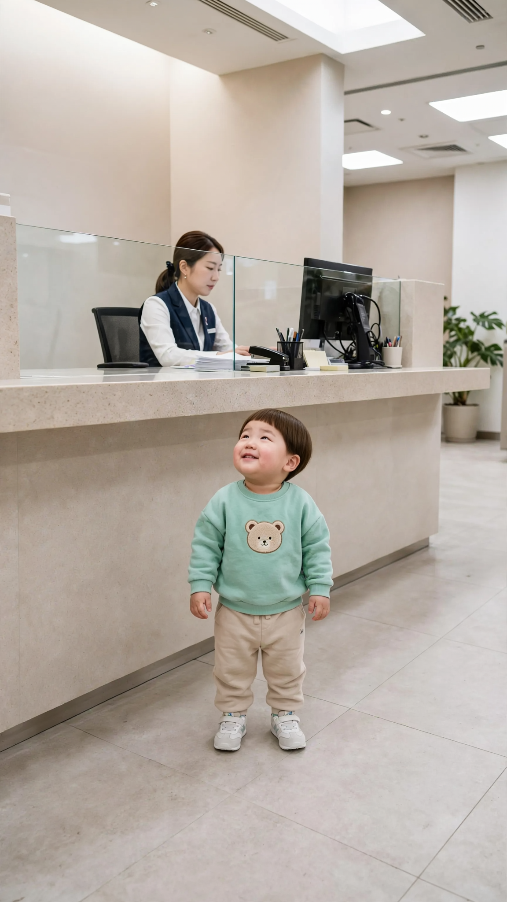
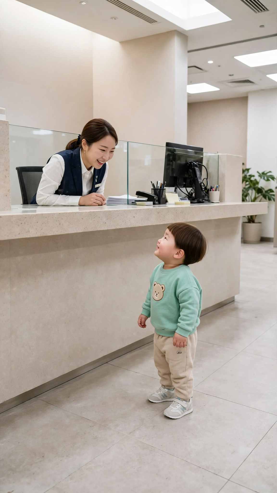
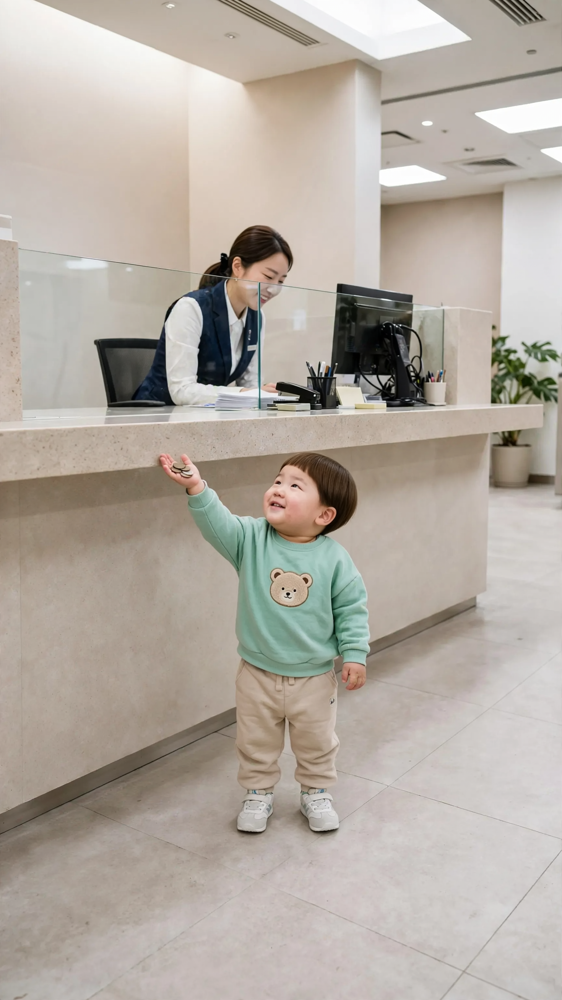
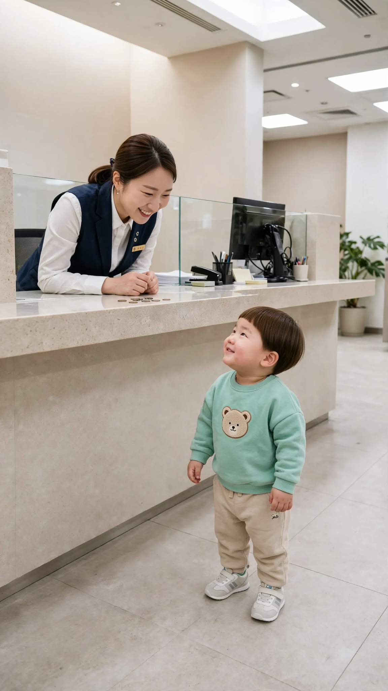
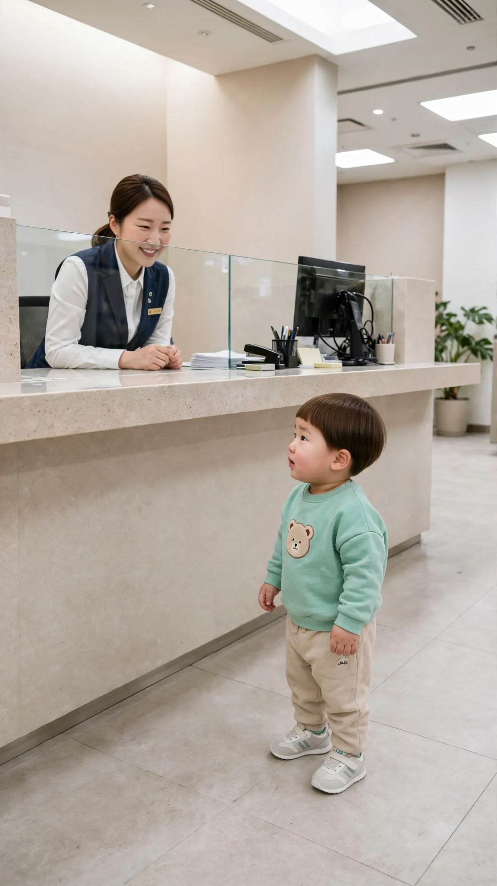
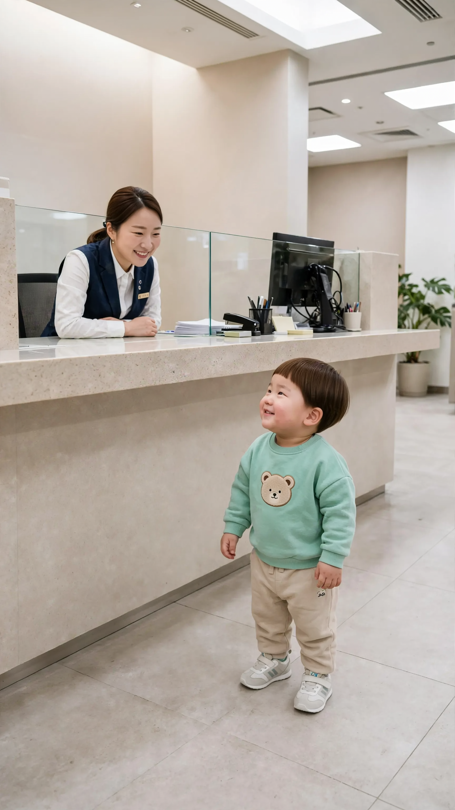
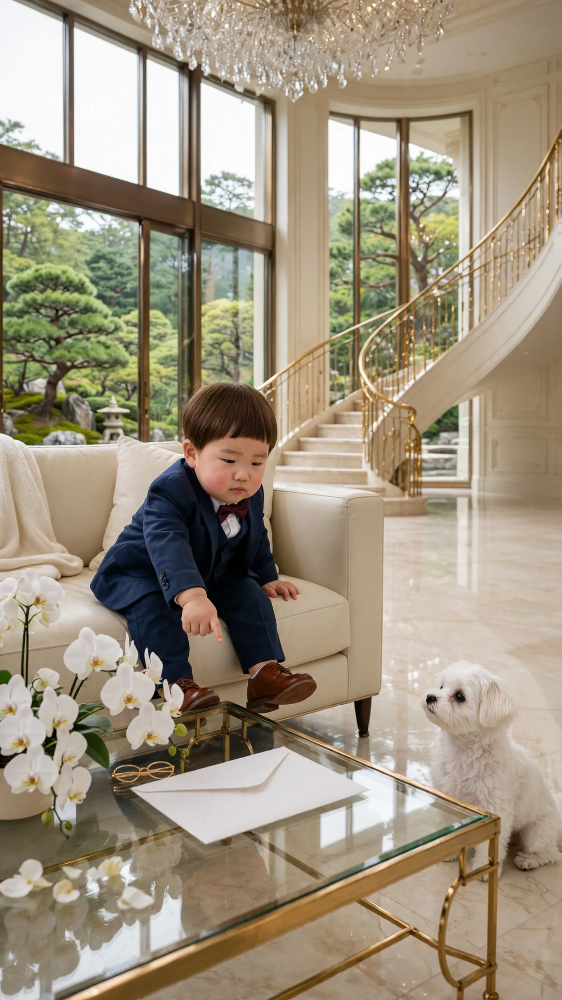
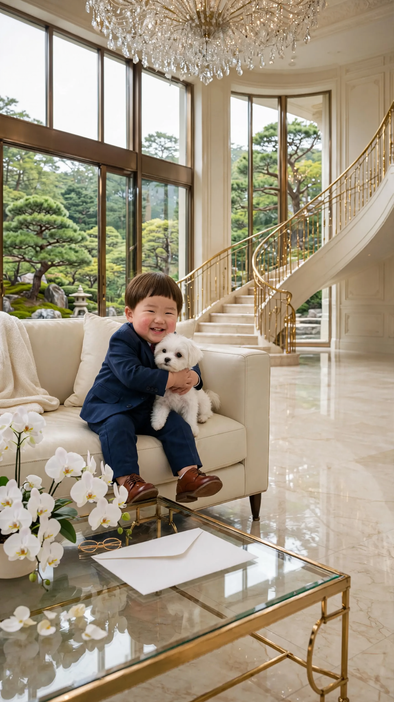
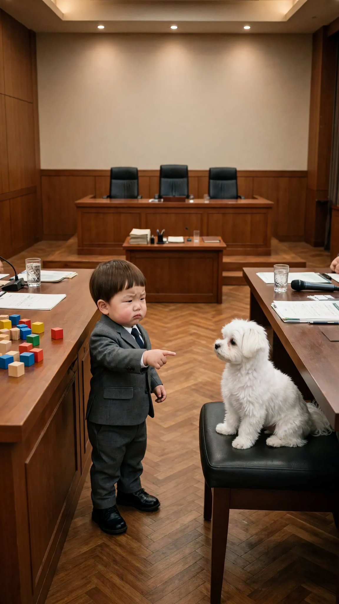
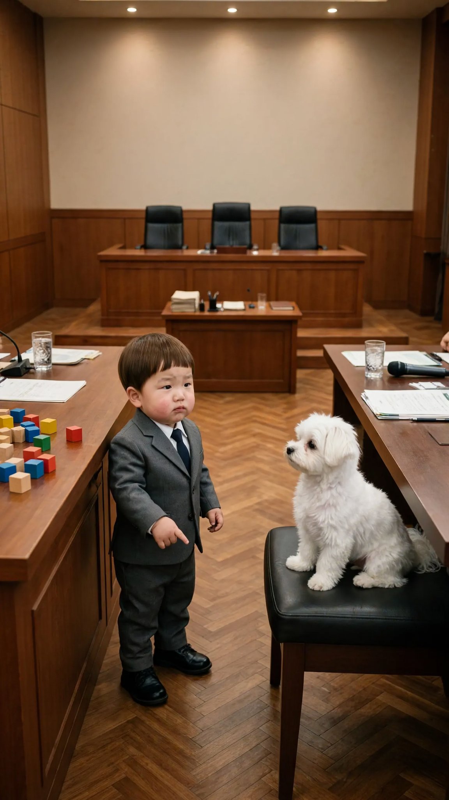

🎬 발주 3편 (v4)
은행 편이 «창구 하나·6컷»으로 바뀐 판 — 이 페이지를 쓰세요. 컷마다 말하는 사람이 한 명(🟦 직원·🟪 엄마 컷은 도윤이 입 다묾)
🏦 저금하러 온 2세 손님 (6+6+4+4+4+6=30초)
1번 컷
⏱ 6초도윤: 「안녕하세요. 저 도유니에요.」

{kind=link}
[Character Action & Continuity] Realistic Korean slice-of-life short video clip. a single teller window at a Korean bank in Korea. Maintain exact appearance from start frame: a 24-month-old Korean toddler boy wearing a light mint sweatshirt with a small bear patch, beige pants and small white sneakers. Scale: a small 24-month-old toddler build with natural proportions. [0-3s] Doyoon looks up at the counter and says his line right away, politely [3-6s] Doyoon waits, rocking on his feet [Dialogue Script & Emotion] 도윤 (단독 발화, 0초부터 바로): (공손하게 또박또박 인사하며) "안녕하세요. 저 도유니에요." [Audio & Voice Specifications] Single Voice Track Only: Definite 18 to 24-month-old Korean INFANT TODDLER boy voice. Low-pitched, cute, raspy little boy toddler voice. Strictly NOT a school-age child, NOT female. Sound Format: Solo toddler voice in a quiet room. Background Sound: Quiet indoor room tone. Continuous steady indoor room air. [Technical Directives] 카메라: 창구 아래 도윤이 얼굴이 보이는 낮은 미디엄 샷. 카메라 고정. 화면: 도윤이와 방만 보인다. 벽과 가구 표면은 무늬 없이 비어 있다. 도윤이 입모양 100% 완벽 립싱크.
2번 컷
⏱ 6초🟦 직원: 「이름이 도윤이구나~ 어떤 업무 도와드릴까요?」

{kind=link}
[Character Action & Continuity] Realistic Korean slice-of-life short video clip. a single teller window at a Korean bank in Korea. Maintain exact appearance from start frame: a 24-month-old Korean toddler boy wearing a light mint sweatshirt with a small bear patch, beige pants and small white sneakers. Scale: a small 24-month-old toddler build with natural proportions. Doyoon stays silent looking up at the teller; only the teller speaks. [0-3s] the teller stands up and leans over the counter, smiling down at Doyoon [3-6s] Doyoon looks up at her with wide eyes [Dialogue Script & Emotion] 은행 직원, 0초부터 바로: (반갑고 상냥하게) "이름이 도윤이구나~ 어떤 업무 도와드릴까요?" [Audio & Voice Specifications] Single Voice Track Only: One Korean female bank teller in her late 20s, bright friendly customer-service voice. Sound Format: One adult woman voice in a quiet bank. Background Sound: Quiet indoor room tone. Continuous steady indoor room air. [Technical Directives] 카메라: 일어선 직원과 올려다보는 도윤이가 보이는 낮은 미디엄 샷. 카메라 고정. 화면: 도윤이와 은행 창구만 보인다. 말소리는 은행 직원 목소리 하나, 도윤이는 입을 다문다.
3번 컷
⏱ 4초도윤: 「이거 저금하러 왔떠요.」

{kind=link}
[Character Action & Continuity] Realistic Korean slice-of-life short video clip. a single teller window at a Korean bank in Korea. Maintain exact appearance from start frame: a 24-month-old Korean toddler boy wearing a light mint sweatshirt with a small bear patch, beige pants and small white sneakers. Scale: a small 24-month-old toddler build with natural proportions. Props: a handful of coins held still in his raised open palm. Prop lock: every prop stays in its spot with the same shape, flaps and contents for the whole clip. [0-2s] Doyoon holds the coins up high and says his line right away [2-4s] Doyoon stays on tiptoe, arm stretched up [Dialogue Script & Emotion] 도윤 (단독 발화, 0초부터 바로): (동전을 높이 들어 올리며 야무지게) "이거 저금하러 왔떠요." [Audio & Voice Specifications] Single Voice Track Only: Definite 18 to 24-month-old Korean INFANT TODDLER boy voice. Low-pitched, cute, raspy little boy toddler voice. Strictly NOT a school-age child, NOT female. Sound Format: Solo toddler voice in a quiet room. Background Sound: Quiet indoor room tone. Continuous steady indoor room air. [Technical Directives] 카메라: 까치발 든 도윤이와 창구가 보이는 낮은 미디엄 샷. 카메라 고정. 화면: 도윤이와 방만 보인다. 벽과 가구 표면은 무늬 없이 비어 있다. 도윤이 입모양 100% 완벽 립싱크.
4번 컷
⏱ 4초🟦 직원: 「저금을 해 드리면 될까요?」

{kind=link}
[Character Action & Continuity] Realistic Korean slice-of-life short video clip. a single teller window at a Korean bank in Korea. Maintain exact appearance from start frame: a 24-month-old Korean toddler boy wearing a light mint sweatshirt with a small bear patch, beige pants and small white sneakers. Scale: a small 24-month-old toddler build with natural proportions. Props: a few coins lying still on the counter edge. Prop lock: every prop stays in its spot with the same shape, flaps and contents for the whole clip. Doyoon stays silent looking up at the teller; only the teller speaks. [0-2s] the teller smiles warmly and nods at Doyoon [2-4s] Doyoon nods back proudly [Dialogue Script & Emotion] 은행 직원, 0초부터 바로: (귀엽다는 듯 다정하게) "저금을 해 드리면 될까요?" [Audio & Voice Specifications] Single Voice Track Only: One Korean female bank teller in her late 20s, bright friendly customer-service voice. Sound Format: One adult woman voice in a quiet bank. Background Sound: Quiet indoor room tone. Continuous steady indoor room air. [Technical Directives] 카메라: 창구 너머 직원과 도윤이가 보이는 낮은 미디엄 샷. 카메라 고정. 화면: 도윤이와 은행 창구만 보인다. 말소리는 은행 직원 목소리 하나, 도윤이는 입을 다문다.
5번 컷
⏱ 4초🟪 엄마(화면 밖): 「도윤아, 거기서 뭐 해?」

{kind=link}
[Character Action & Continuity] Realistic Korean slice-of-life short video clip. a single teller window at a Korean bank in Korea. Maintain exact appearance from start frame: a 24-month-old Korean toddler boy wearing a light mint sweatshirt with a small bear patch, beige pants and small white sneakers. Scale: a small 24-month-old toddler build with natural proportions. Doyoon stays silent with a sulky pout; only the off-screen mother speaks. [0-2s] Doyoon turns his head toward the left, listening [2-4s] Doyoon blinks and looks back and forth [Dialogue Script & Emotion] 엄마(화면 밖), 0초부터 바로: (놀라고 반가운 목소리로) "도윤아, 거기서 뭐 해?" [Audio & Voice Specifications] Single Voice Track Only: One off-screen Korean woman in her early 30s, the boy's mother, speaking from outside the frame in a calm, warm, matter-of-fact voice. Sound Format: One off-screen adult woman voice in a quiet room. Background Sound: Quiet indoor room tone. Continuous steady indoor room air. [Technical Directives] 카메라: 창구 앞 도윤이가 보이는 낮은 미디엄 샷. 카메라 고정. 화면: 도윤이와 방만 보인다. 벽과 가구 표면은 무늬 없이 비어 있다. 말소리는 화면 밖 엄마 목소리 하나, 도윤이는 입을 다문다.
6번 컷
⏱ 6초도윤: 「도유니 부자 되려고 저금해!」

{kind=link}
[Character Action & Continuity] Realistic Korean slice-of-life short video clip. a single teller window at a Korean bank in Korea. Maintain exact appearance from start frame: a 24-month-old Korean toddler boy wearing a light mint sweatshirt with a small bear patch, beige pants and small white sneakers. Scale: a small 24-month-old toddler build with natural proportions. [0-3s] Doyoon turns toward his mom and says his line right away with a proud grin [3-6s] Doyoon stands tall with his chest puffed out and beams [Dialogue Script & Emotion] 도윤 (단독 발화, 0초부터 바로): (턱을 치켜들고 뿌듯하게) "도유니 부자 되려고 저금해!" [Audio & Voice Specifications] Single Voice Track Only: Definite 18 to 24-month-old Korean INFANT TODDLER boy voice. Low-pitched, cute, raspy little boy toddler voice. Strictly NOT a school-age child, NOT female. Sound Format: Solo toddler voice in a quiet room. Background Sound: Quiet indoor room tone. Continuous steady indoor room air. [Technical Directives] 카메라: 뿌듯한 도윤이 얼굴이 보이는 낮은 미디엄 샷. 카메라 고정. 화면: 도윤이와 방만 보인다. 벽과 가구 표면은 무늬 없이 비어 있다. 도윤이 입모양 100% 완벽 립싱크.
💰 이 돈 받고 떠나 (6+6+8=20초)
1번 컷
⏱ 6초도윤: 「콩이, 이거 받고 떠나.」

{kind=link}
[Character Action & Continuity] Realistic Korean slice-of-life short video clip. a chaebol mansion living room from a Korean drama in Korea. Maintain exact appearance from start frame: a 24-month-old Korean toddler boy wearing a tiny navy three-piece suit with a white shirt and a small burgundy bow tie, polished little brown shoes. Scale: a small 24-month-old toddler build with natural proportions. Props: a thick white envelope lying still on the glass coffee table. Prop lock: every prop stays in its spot with the same shape, flaps and contents for the whole clip. [0-3s] Doyoon points at the envelope with a playful pretend-serious face and says his line right away [3-6s] Doyoon crosses his arms and lifts his chin like a drama chairman [Dialogue Script & Emotion] 도윤 (단독 발화, 0초부터 바로): (드라마 회장님처럼 근엄한 척) "콩이, 이거 받고 떠나." [Audio & Voice Specifications] Single Voice Track Only: Definite 18 to 24-month-old Korean INFANT TODDLER boy voice. Low-pitched, cute, raspy little boy toddler voice. Strictly NOT a school-age child, NOT female. Sound Format: Solo toddler voice in a quiet room. Background Sound: Quiet indoor room tone. Continuous steady indoor room air. [Technical Directives] 카메라: 소파의 도윤이 얼굴이 크게 보이는 가까운 미디엄 샷. 카메라 고정. 화면: 도윤이와 방만 보인다. 벽과 가구 표면은 무늬 없이 비어 있다. 도윤이 입모양 100% 완벽 립싱크.
2번 컷
⏱ 6초도윤: 「어? 안 가?」

[Character Action & Continuity] Realistic Korean slice-of-life short video clip. a chaebol mansion living room from a Korean drama in Korea. Maintain exact appearance from start frame: a 24-month-old Korean toddler boy wearing a tiny navy three-piece suit with a white shirt and a small burgundy bow tie, polished little brown shoes. Scale: a small 24-month-old toddler build with natural proportions. Props: a thick white envelope lying still on the glass coffee table. Prop lock: every prop stays in its spot with the same shape, flaps and contents for the whole clip. [0-3s] Doyoon looks down at Kongi beside him and asks his line right away, surprised [3-6s] Kongi snuggles closer and rests its chin on his knee [Dialogue Script & Emotion] 도윤 (단독 발화, 0초부터 바로): (콩이를 내려다보며 깜짝 놀라) "어? 안 가?" [Audio & Voice Specifications] Single Voice Track Only: Definite 18 to 24-month-old Korean INFANT TODDLER boy voice. Low-pitched, cute, raspy little boy toddler voice. Strictly NOT a school-age child, NOT female. Sound Format: Solo toddler voice in a quiet room. Background Sound: Quiet indoor room tone. Continuous steady indoor room air. [Technical Directives] 카메라: 소파의 도윤이 얼굴이 크게 보이는 가까운 미디엄 샷. 카메라 고정. 화면: 도윤이와 방만 보인다. 벽과 가구 표면은 무늬 없이 비어 있다. 도윤이 입모양 100% 완벽 립싱크.
3번 컷
⏱ 8초도윤: 「그럼 도유니랑 같이 살자.」

{kind=link}
[Character Action & Continuity] Realistic Korean slice-of-life short video clip. a chaebol mansion living room from a Korean drama in Korea. Maintain exact appearance from start frame: a 24-month-old Korean toddler boy wearing a tiny navy three-piece suit with a white shirt and a small burgundy bow tie, polished little brown shoes. Scale: a small 24-month-old toddler build with natural proportions. [0-4s] Doyoon hugs Kongi and says his line right away with a big smile [4-8s] Doyoon rests his head on Kongi with a happy satisfied face [Dialogue Script & Emotion] 도윤 (단독 발화, 0초부터 바로): (콩이를 꼭 안고 행복하게) "그럼 도유니랑 같이 살자." [Audio & Voice Specifications] Single Voice Track Only: Definite 18 to 24-month-old Korean INFANT TODDLER boy voice. Low-pitched, cute, raspy little boy toddler voice. Strictly NOT a school-age child, NOT female. Sound Format: Solo toddler voice in a quiet room. Background Sound: Quiet indoor room tone. Continuous steady indoor room air. [Technical Directives] 카메라: 소파의 도윤이 얼굴이 크게 보이는 가까운 미디엄 샷. 카메라 고정. 화면: 도윤이와 방만 보인다. 벽과 가구 표면은 무늬 없이 비어 있다. 도윤이 입모양 100% 완벽 립싱크.
⚖️ 이의 있습니다 2세 검사 (6+6+8=20초)
1번 컷
⏱ 6초도윤: 「범인은 콩이야!」

{kind=link}
[Character Action & Continuity] Realistic Korean slice-of-life short video clip. a Korean courtroom from a legal drama in Korea. Maintain exact appearance from start frame: a 24-month-old Korean toddler boy wearing a tiny charcoal suit with a white shirt and a navy tie, polished little black shoes. Scale: a small 24-month-old toddler build with natural proportions. Props: a few toy blocks lying still on the prosecutor table. Prop lock: every prop stays in its spot with the same shape, flaps and contents for the whole clip. [0-3s] Doyoon points across the courtroom at Kongi and says his line right away with a playful pretend-serious face [3-6s] Kongi tilts its head and blinks innocently [Dialogue Script & Emotion] 도윤 (단독 발화, 0초부터 바로): (검사처럼 콩이를 가리키며 근엄한 척) "범인은 콩이야!" [Audio & Voice Specifications] Single Voice Track Only: Definite 18 to 24-month-old Korean INFANT TODDLER boy voice. Low-pitched, cute, raspy little boy toddler voice. Strictly NOT a school-age child, NOT female. Sound Format: Solo toddler voice in a quiet room. Background Sound: Quiet indoor room tone. Continuous steady indoor room air. [Technical Directives] 카메라: 검사석의 도윤이와 건너편 콩이가 보이는 사선 미디엄 샷. 카메라 고정. 화면: 도윤이와 방만 보인다. 벽과 가구 표면은 무늬 없이 비어 있다. 도윤이 입모양 100% 완벽 립싱크.
2번 컷
⏱ 6초도윤: 「콩이… 진짜 콩이 했떠?」

{kind=link}
[Character Action & Continuity] Realistic Korean slice-of-life short video clip. a Korean courtroom from a legal drama in Korea. Maintain exact appearance from start frame: a 24-month-old Korean toddler boy wearing a tiny charcoal suit with a white shirt and a navy tie, polished little black shoes. Scale: a small 24-month-old toddler build with natural proportions. Props: a few toy blocks lying still on the prosecutor table. Prop lock: every prop stays in its spot with the same shape, flaps and contents for the whole clip. [0-3s] Doyoon lowers his pointing hand and asks his line right away, unsure [3-6s] Doyoon glances down at the toy blocks and fidgets [Dialogue Script & Emotion] 도윤 (단독 발화, 0초부터 바로): (콩이의 순한 눈을 보고 멈칫하며) "콩이… 진짜 콩이 했떠?" [Audio & Voice Specifications] Single Voice Track Only: Definite 18 to 24-month-old Korean INFANT TODDLER boy voice. Low-pitched, cute, raspy little boy toddler voice. Strictly NOT a school-age child, NOT female. Sound Format: Solo toddler voice in a quiet room. Background Sound: Quiet indoor room tone. Continuous steady indoor room air. [Technical Directives] 카메라: 검사석의 도윤이 얼굴이 보이는 미디엄 샷. 카메라 고정. 화면: 도윤이와 방만 보인다. 벽과 가구 표면은 무늬 없이 비어 있다. 도윤이 입모양 100% 완벽 립싱크.
3번 컷
⏱ 8초도윤: 「이의 있떠! 도유니가 했떠!」

[Character Action & Continuity] Realistic Korean slice-of-life short video clip. a Korean courtroom from a legal drama in Korea. Maintain exact appearance from start frame: a 24-month-old Korean toddler boy wearing a tiny charcoal suit with a white shirt and a navy tie, polished little black shoes. Scale: a small 24-month-old toddler build with natural proportions. Props: a few toy blocks lying still on the prosecutor table. Prop lock: every prop stays in its spot with the same shape, flaps and contents for the whole clip. [0-4s] Doyoon raises one hand high and shouts his line right away [4-8s] Doyoon lowers his hand with a sheepish embarrassed grin [Dialogue Script & Emotion] 도윤 (단독 발화, 0초부터 바로): (손을 번쩍 들고 외치며) "이의 있떠! 도유니가 했떠!" [Audio & Voice Specifications] Single Voice Track Only: Definite 18 to 24-month-old Korean INFANT TODDLER boy voice. Low-pitched, cute, raspy little boy toddler voice. Strictly NOT a school-age child, NOT female. Sound Format: Solo toddler voice in a quiet room. Background Sound: Quiet indoor room tone. Continuous steady indoor room air. [Technical Directives] 카메라: 손을 든 도윤이 얼굴이 보이는 미디엄 샷. 카메라 고정. 화면: 도윤이와 방만 보인다. 벽과 가구 표면은 무늬 없이 비어 있다. 도윤이 입모양 100% 완벽 립싱크.